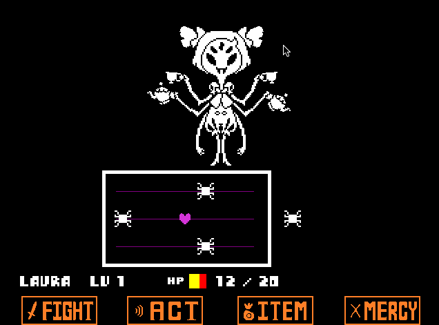
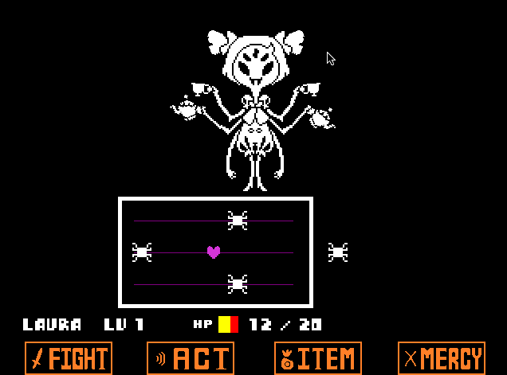

Undertale es un videojuego de rol desarrollado por un número de personas muy reducido, casi exclusivamente por el desarrollador indie y compositor Toby Fox. En este videojuego, el jugador adopta el control del joven humano protagonista que ha caído en un mundo subterráneo, una región enorme aislada debajo de la superficie de la tierra, separada por una barrera mágica. El jugador se encuentra con varios monstruos durante su misión para regresar a la superficie, principalmente a través del sistema de combate; este deberá navegar a través de mini-ataques bullet hell del adversario, y puede optar por pacificar o someter a los monstruos con el fin de perdonarlos en lugar de asesinarlos. Estas opciones afectan a la jugabilidad, diálogos, personajes e historia cambiando en función de los resultados.
Fox desarrolló la totalidad del videojuego de manera independiente, incluyendo la escritura y composición de su música, a excepción de algunas ilustraciones adicionales creadas por Temmie Chang. Fue inspirado principalmente por las sagas de videojuegos de rol Mother y Mario & Luigi, la saga de videojuegos bullet hell Touhou Project, y la comedia británica Mr. Bean. Inicialmente tenía que contar con dos horas de duración y estaba previsto que se publicara a mediados de 2014, pero el desarrollo se retrasó en el transcurso de los próximos tres años.
Fue creado con la aplicación GameMaker: Studio, siendo publicado el 15 de septiembre de 2015 para Microsoft Windows y OS X, además de GNU/Linux el 17 de julio de 2016, a través de la plataforma Steam. Versiones porteadas para las plataformas PlayStation 4 y PlayStation Vita están programadas para su lanzamiento a mediados de 2017. Inmediatamente tras su lanzamiento, fue aclamado por su guion, material temático, sistema de combate intuitivo, composición musical y originalidad, con elogios dirigidos a su historia, diálogos y personajes. Vendió más de un millón de copias, y fue nominado para múltiples galardones y premios, incluyendo como Videojuego del Año de varias convenciones y publicaciones de videojuegos.
Tiempo atrás, dos razas reinaban sobre la Tierra: Los Humanos y los Monstruos. Un día, la guerra estalló entre las dos razas y tras una larga serie de batallas, los humanos vencieron. Los mejores y más grandes magos humanos sellaron a los monstruos bajo tierra, en el Subsuelo con una barrera mágica.
Varios años después de la guerra, en el 201X, un niño escaló el Monte Ebott por razones desconocidas. Existe un dicho que quienes escalan el Monte, nunca vuelven. El protagonista descubre una enorme abertura en la montaña y cae dentro de la cueva. Aquí es donde empieza su aventura.
Este videojuego indie se puede jugar bien con un mando de consola, usando los joysticks y varios botones, o bien con el teclado, utilizando exclusivamente las flechas direccionales para moverse, la barra espaciadora, y las teclas "X", "Z" y "C".
El sistema de combate de Undertale es por turnos constituidos por dos fases: La primera fase es defensiva, y, por tanto, el jugador maneja un corazón, representación de su alma, de forma que esquive los proyectiles que le envía el enemigo, a lo que se llama bullet hell.

La segunda fase es ofensiva, en la cual el jugador puede elegir entre atacar, utilizar un objeto, actuar —lo cual es diferente para cada monstruo y es donde también se puede obtener información específica de él, como su ataque y su defensa— o pedir clemencia para que el contrario no ataque.
A medida que el juego progresa, se incluyen nuevos elementos, como obstáculos de colores que requieren que el jugador permanezca quieto o se mueva a través de estos. Las batallas contra los jefes también pueden cambiar la forma de control del corazón provocando que este pese y se tenga que saltar, haciendo que se mueva de una casilla a otra u obteniendo un escudo entre otras cosas.
 

La forma de guardado es a través de unas estrellas amarillas situadas en los escenarios cada cierta distancia. Además de guardar, estos puntos rellenan la salud del jugador.
Si el jugador consigue reducir la vida del enemigo a 0, éste será destruido recompensando al jugador con un aumento de nivel y de puntos de exterminio —que corresponderían a los habituales puntos de experiencia—, así como también con oro. Si el jugador trata de modo apropiado a los distintos monstruos, tendrá la posibilidad de perdonarlos en lugar de destruirlos, poniendo fin al combate sin conseguir puntos de experiencia y consiguiendo una cantidad de oro reducida.
Durante los combates, los monstruos hablarán con el protagonista —incluso con el propio jugador, rompiendo la cuarta pared— Con estas interacciones, se desvela la personalidad, historia y sentimientos de cada monstruo. Los ataques enemigos variarán dependiendo de las acciones que tomen los jugadores haciendo que los ataques de los monstruos sean menos agresivos si el jugador responde con acciones no violentas; en cambio, los ataques serán más agresivos y difíciles de esquivar si el jugador decide atacar.
Como en los videojuegos de rol clásicos, el jugador tiene la posibilidad durante el juego de comprar objetos en tiendas a cambio del oro ganado durante los combates pudiendo, además, hablar con los vendedores para obtener información sobre el universo del juego. Las decisiones del jugador tendrán un impacto sobre el final del juego, dando lugar a 3 rutas:
• Neutral: Es el final por defecto, resultado de matar más de un monstruo, incluyendo jefes, incumpliendo los requisitos para los otros dos finales que son exterminar a todos o no matar a ninguno. El final variará dependiendo de las acciones del jugador sobre a quién haya matado.
• Pacifista: Para conseguir este final, el jugador no debe matar a ningún monstruo y conseguir la amistad de todos los personajes posibles. Este tendrá un final feliz siendo el “final verdadero”.
• Genocida: Al contrario que la ruta pacifista, se debe acabar con un número determinado de monstruos en cada zona del videojuego antes de encontrase con el jefe. Si se cumple con este requisito, se avisará al jugador de que ha alcanzado ese número haciendo aparecer la pantalla de batalla con la oración “Pero no vino nadie.”, cambiando la música de fondo y sustituyendo el texto de los puntos de guardado por una única palabra: “determinación”. Esto lleva a un final apocalíptico donde se llega a la extinción de los monstruos.